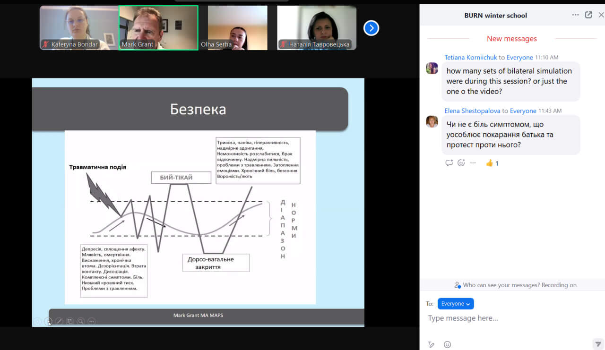

Launch of the Erasmus Winter Online School (January 13, 2025)
On January 13, 2025, the Erasmus project winter school was launched. Its primary goal is to train specialists who will provide psychological support in university Center for Psychological Resilience and Wellbeing at five Ukrainian universities. Prof. Lars Kulchinke from the International Psychoanalitical University of Berlin GmbH officially opened the Winter School, outlining the structure of the training and providing recommendations for study.

The first day was dedicated to training by Mark Grant on developed by him protocols for working with chronic pain using methods proposed by F.Shapiro. Participants explored the human reactions to traumatic events and learned about therapeutic strategies for clients experiencing the aftermath of trauma. Additionally, participants had the opportunity to work with literature dedicated specifically to this area and related protocols. We explored how trauma impacts people and discussed effective therapy strategies. To make things more practical, we worked with case studies and watched videos with commentary by therapist Mark Grant. Our Ukrainian partners found these resources extremely helpful.
